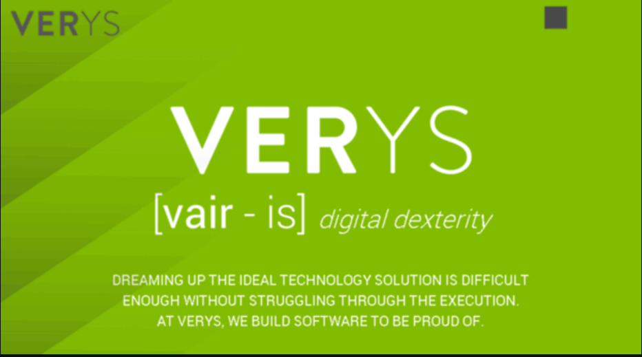

Internship at Verys
June 6th, 2017
Today was the first day of my internship at Verys. I met with Chris Antonius, the head of the company, and got a tour of the office. It was not what I expected, it was a few highly decorated rooms full of computers with many young people working, absorbed in code. I learned a lot about the company. Verys is company that works for businesses such as Blizzard, Disney, American Airlines and many other companies and develops their software such as websites and operating systems. They have teams which work on one project at a time, and then develop their client's’ projects. I met with Mike Miner and Ray Krow, who were part of a team developing a new website for a company called Hood Kitchen. Hood Kitchen rents out kitchen space to anyone for many purposes, and they wanted a new website created to better help them with the process of renting out their kitchen space. One thing that was required in creating this new website was dating all the data from current customers from the old website and storing it so it could be entered the new website’s database. However, I there was too much data to be copied by hand, so a program needed to be created to copy the data over and store it in the new database. The first day I worked on deciding what data would need to be taken from the site and stored, so it would be easier to plan which data I would be taking off the site. After this I went to lunch with Mr. Antonius and some of the people from the Hood Kitchen project. It was a lot of fun and a new experience to view people in the workplace. After lunch, we went back to the office and I began to make the scraper, designed to “scrape” data from the old Hood Kitchen website. It was very difficult. At the end of the day, I listened in on a meeting about planning the development of the Hood Kitchen system. From this meeting, I learned the system Verys used to complete projects, called agile management. This is when progress is made in three-week ‘sprints’, and for each sprint, different tasks are set up and their difficulty is measured.
June 7th, 2017
Today I got right to work on the scraper program. After I watched a few tutorials, I began attempting to access the website from my code using C Sharp. The first problem I encountered was that the admin website that I needed to access the client data from required a username and password. I knew the username and password, but it was very difficult to ‘log in’ to the website with just code. In conclusion, I generated cookies and sent them along with my attempt to load the website, allowing the website to be properly opened. My next challenge was to access the data displayed on the screen. To do this, I created variables that stored the nodes to certain parts of the Html code, which I specified through determining the xPaths that pointed to these specific parts. Then, I called a function that pulled out only the inner texts of each node and then converted each into a string, a datatype that could be stored. I still need to do a lot of work to pull more data from the site and organize the data so it can be easily added into the database for the new website. I began creating a POCO (plain old class object) class to store all the data that is pulled. This will be slightly complicated because it includes an arrayList of Order objects which each holds data for all the orders of each client. At the end of the day I listened in on a meeting where to coding managers from Blizzard talked with a Verys team leader about a website called Tespa which Verys was developing for Blizzard to deal with college gaming clubs and lets them establish a Tespa chapter. In this meeting, I learned about the pros of agile management. Using three week sprints allows a team to adapt to changes in the overall project, and allows clients to easily view the team’s progress in the project.
June 8th, 2017
When I arrived at Verys, I began by continued working on getting the data from the old Hood Kitchen website. Then, I got to go to a meeting at the Hood Kitchen. This was very cool and I really enjoyed seeing how real-life meetings took place. We met with an accountant who explained how she wanted the website to be improved to save time and make the system of renting out kitchens more efficient. It was interesting to see how much the website would lessen the work of the accountant and everyone else in the Hood Kitchen. After lunch, I went back to the office to work on the scraper. So far, I had not been able to make much progress because I had difficulty coming up with the correct xPaths to each piece of data in the Html code. However, I fixed this problem by not going right to the data, but instead using xPaths to move closer and closer to the data, guaranteeing that I went in the right direction. At the end of the data, I had retrieved a lot of data such as the customers’ names, first and last, the customers’ emails, and their phone numbers from the website but I still needed a lot more data. It was really satisfying to have finally succeeded in getting the data and contributing to the workplace, though I still had a lot of work to do.
June 9th, 2017
Today was the last day of the work-week, so I was eager to finish the scraper. Since I had already figured out the general format for reading from the Html code and I understood the xPaths, so it was easier to scrape the rest of the data than I expected. In fact it only took a few hours until I had a variable that stored all the data for every customer. Now that I had successfully scraped the data, it was now time to upload the data to a JSON(JavaScript Object Notation) file. This is just a standard way of storing the information, to be easily accessed by other programs, allowing all the customers to be easily added into the database for the new website. After I had successfully created this file, my next task was to get pdfs for each applications and orders so they could be saved effectively. To do this I had to get the link to each customer’s application and orders, and then use a pdf converter. However, the converter required the html code from each page, so I had to open each page before I could use the converter. After doing this, the program was really slow (because it had to open so many pages to open in each run) but still was effective. Finally, I had to get more documents from another page, but this time only the links were required. After a lot of hard work, I had opened up a lot more pages and had succeeded in making a scraper. In my first week, I had learned a lot I didn’t know and had got the feel of what it is like to live in the real world.
June 12, 2017
Today was an easy day. I began by revising my Hood Kitchen code, making it so the pdfs contained only the data we wanted. This involved creating an xPath to only the main part of the document, which contained the actual information, rather than aesthetic borders and other things on the page. The next step was to turn these nodes of html code in to just a long string of html, which could then be converted to a pdf. After I had completed this, my next task was to create a text service. This would allow one to text people from a computer. Making a general text service for Verys would allow it to be used in any of their future programs by just calling a simple method. To do this, I had to use Twilio, a website that allows coders to get phone numbers and send texts or other messages. I sent a post request to Twilio, using my account SID, an authentication code, and the phone numbers I want to send the message to and from. After I completed that, I created an options class, which allowed certain fields to be determined before sending the text message, making the program simpler for the user. Tomorrow I intend to continue working on this text service, and it could really benefit Verys to have this already established.
June 13, 2017
Today I finished the text service. I made it so the user created an instance of an options class which I created, then used that options object to instantiate a textServic object. Then this textService could then be used to send messages by passing a phone number and the text body to the a sendSms function. I also created a sendMms function, which allowed media messages to be sent such as pictures. Then a made two more copies of each function which were async. This is useful when sending many messages at a time, and will greatly speed up functionality. I then created another function that checked if the phone number given was in a valid format. Whenever the user tried to send a message, it would first call the method that would check if the number is valid, and if it wasn’t, it would throw an exception. After that, it was time to test my textService class. I created a new test project where I simulated sending an SMS, an async SMS, an MMS, and an async MMS. I also created tests where I tried to send a message with a bad phone number, to make sure an exception would be thrown. After this, my next task was to create an email service, to send emails to people from code. I used a website called SendGrid, which allowed me to do just that. I used the same process as I did for the text service, which, when completed, will hopefully allow Verys employees to send emails easily in the new projects.
June 14, 2017
Today I continued working on the email service. Like with the text service, I created an EmailServiceoptions class which helped me instantiate an email service object. I also created an Email Validator which checked if an email was valid before sending the email. Then it was time to test. I made various tests in which I passed different to the parameters for the Email service, using different emails, different verification ids, and other parameters. This allowed me to debug my program and make sure it was effective. Some of the tests were set up to fail, and some I expected to succeed. After going through all the one problem was that the email validator did not catch some clearly bogus emails, but there is nothing that can be done about it. What will happen is the message will just not be able to send. After completing the email code, I learned a bit about Html. Html is not a true code language, but is used to create the layout of a website. It uses tags to create different configurations of text and images, making it so that certain things can have a different position on the screen. For the hood kitchen project, the designer creates images for how he wants to create each page, and the developers take these designs and use Html to create a webpage with these designs. However, Html does not allow for a design to look really nice. To do this, css must be used, a language which helps html by allowing styles to be created for different parts of the Html, which makes it easier to create better designs. In order to make user interaction however, Javascript must be involved. This would be needed in doing things like moving things around the screen, or anything else where the user interacts with the website. The last thing I did was in the email service, I switched my email with a verys email, so I would not get emailed every there was the tests were used.
June 15, 2017
This morning I began changing the names of my text service and email service tests so that anyone could understand them, and also modified them to make them more structured and standard. I also modified the text service so that the same function could send media and text messages, depending on what parameters we passed to the function. This made my code simpler and better applicable when needed in other projects. The next thing I had to do was modify the current hood kitchen website. I changed the client login button so that when clicked, it went to the new sign in that Verys had created. This was time consuming because the client login button was present on many pages and I had to modify each one individually. After lunch, I listened in on another Hood Kitchen meeting planning the part of the website where the clients booked kitchens. This was complex because there was so much data to display for the user, such as which kitchen they wanted, the time they wanted, and what materials the needed in the kitchen. There was also a discussion about how storage would be rented, for the Hood Kitchen currently has a very poor system for renting storage. After the meeting, my next task was to turn some links I had received from scraping the Hood Kitchen site into images, which I would save on my desktop. Tonight I will prepare for my presentation for Verys.
June 16, 2017
Today was my final day at Verys. I came late because I had to give my presentation. That day all I did was clean up my scraper code and learn a little bit about servers. I went to lunch with Mr. Antonius and the entire Hood Kitchen team. It was a great conclusion to the internship.